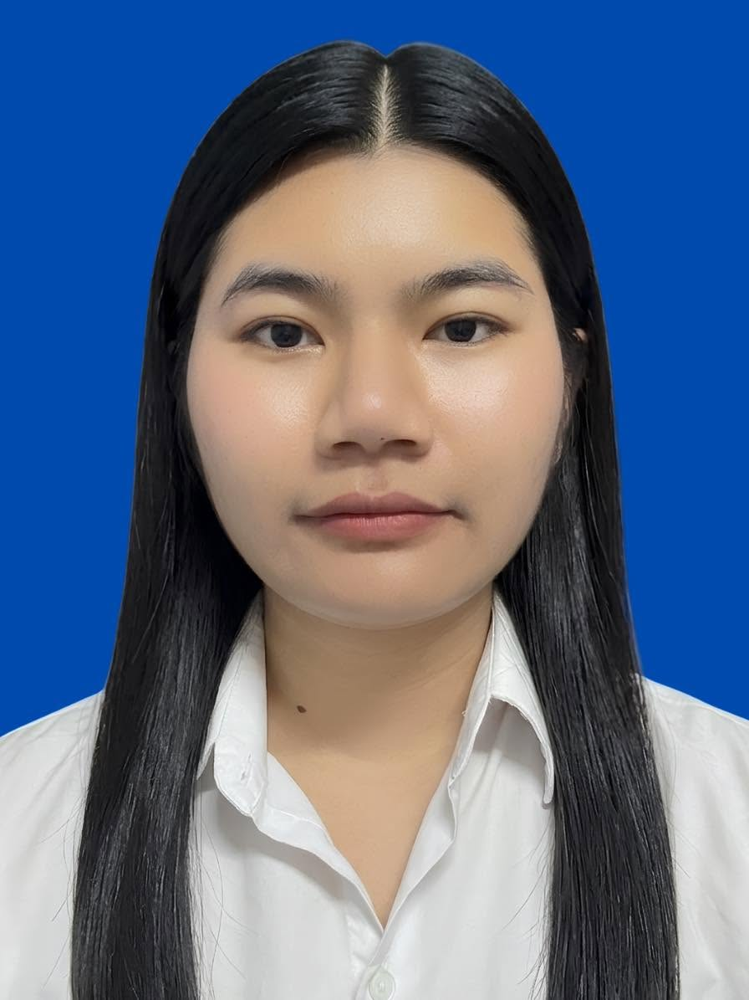
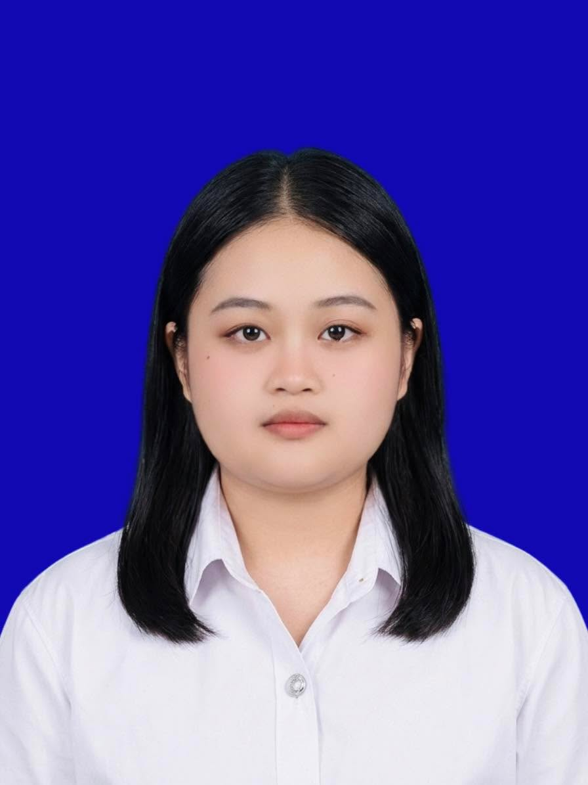

เว็บไซต์ Gladiator Combat Archives เป็นแพลตฟอร์มดิจิทัลที่รวบรวมบันทึกการประลองโรมัน พร้อมสร้างกราฟความรู้เชื่อมโยงข้อมูลนักสู้ เพื่อให้สืบค้นประวัติศาสตร์ได้ง่าย
เว็บไซต์ Gladiator Combat Archives ริเริ่มขึ้นจากแนวความคิดและความมุ่งมั่นของนิสิตสาขาสารสนเทศศึกษา ที่เล็งเห็นถึงความสำคัญในการนำองค์ความรู้ทางด้านการจัดการสารสนเทศและเทคโนโลยีดิจิทัล มาประยุกต์ใช้เพื่อการอนุรักษ์และต่อยอดมรดกทางประวัติศาสตร์โบราณ โดยมีวัตถุประสงค์เพื่อรวบรวมและฟื้นฟูบันทึกข้อมูลเกี่ยวกับการประลองในสังเวียนโรมันโบราณ ที่กระจัดกระจายอยู่ในแหล่งข้อมูลต่างๆ ให้ถูกรวบรวมเข้ามาไว้บนแพลตฟอร์มดิจิทัลที่เป็นศูนย์กลาง
ทั้งนี้ คณะผู้จัดทำได้นำข้อมูลดังกล่าวมาวิเคราะห์ สังเคราะห์ และพัฒนาต่อยอดด้วยการออกแบบระบบฐานข้อมูลกราฟความรู้ (Knowledge Graph) เพื่อเชื่อมโยงความสัมพันธ์เชิงลึกของโครงข่ายข้อมูลนักสู้ สถิติการประลอง และบริบททางประวัติศาสตร์ที่เกี่ยวข้อง ซึ่งไม่เพียงแต่ช่วยเพิ่มประสิทธิภาพในการสืบค้น วิเคราะห์ และจัดการข้อมูลเชิงปริมาณและคุณภาพได้อย่างเป็นระบบเท่านั้น แต่ยังมุ่งเน้นการนำเสนอข้อมูลผ่านรูปแบบดิจิทัลที่ทันสมัย เข้าถึงง่าย และมีความน่าสนใจ เพื่อเปิดโอกาสให้ผู้สนใจทั่วไป นักศึกษา และนักวิชาการ สามารถศึกษาเรียนรู้เรื่องราวทางประวัติศาสตร์โรมันโบราณได้อย่างเข้าใจง่ายและมีประสิทธิภาพสูงสุด
- รวบรวมระเบียนข้อมูลนักสู้กว่า 9,900 คน พร้อมคุณลักษณะละเอียด 29 มิติ เพื่อเป็นแหล่งอ้างอิงทางวิชาการและสาธารณชนที่เชื่อถือได้
- เพื่อพัฒนาให้เว็บไซต์เป็นแหล่งอ้างอิงทางวิชาการและศูนย์กลางสารสนเทศด้านประวัติศาสตร์ที่ทรงคุณค่า ซึ่งมีความน่าเชื่อถือ ปลอดภัย และเปิดโอกาสให้สาธารณชน นิสิตนักศึกษา และผู้สนใจทั่วไปสามารถเข้าถึงและสืบค้นข้อมูลได้อย่างสะดวก
- เพื่อประยุกต์ใช้เทคโนโลยีฐานข้อมูลกราฟ (Neo4j) ร่วมกับภาษาโปรแกรม Python ในการสังเคราะห์ วิเคราะห์ และสร้างแบบจำลองความสัมพันธ์เชิงลึกระหว่างประเภทของนักสู้ รูปแบบอาวุธ โรงเรียนฝึกซ้อม (ludus) และปัจจัยแวดล้อมทางประวัติศาสตร์
- เพื่อศึกษาความสัมพันธ์เชิงสาเหตุและอิทธิพลของทักษะพิเศษ ประเภทสายการต่อสู้ และปัจจัยสนับสนุนเชิงโครงสร้าง ที่มีผลต่ออัตราชัยชนะและการอยู่รอดชีวิตของนักรบในสังเวียนโบราณ
- เพื่อออกแบบและพัฒนาส่วนติดต่อผู้ใช้งาน (UX/UI) ภายใต้แนวคิดพิพิธภัณฑ์ศิลปะร่วมสมัย (Modern Art Museum) ที่เน้นความประณีต เรียบง่าย สบายตา และเสริมสร้างปฏิสัมพันธ์ที่นุ่มนวล
- เพื่อผสานรวมคุณค่าทางประวัติศาสตร์เข้ากับเทคโนโลยีการแสดงผลสมัยใหม่ ส่งมอบประสบการณ์การเรียนรู้เชิงดิจิทัลที่มีเอกลักษณ์ ช่วยให้ผู้ใช้งานสามารถทำความเข้าใจเรื่องราวทางประวัติศาสตร์ได้อย่างลึกซึ้งและเข้าถึงง่ายยิ่งขึ้น
นิสิตผู้ร่วมในการสร้างสรรคเว็บไซต์ ทั้งหมด 10 คน
ออกแบบและจัดทำสื่อสิ่งพิมพ์ โปสเตอร์ หรือสื่อแสดงผลงาน เพื่อนำเสนอข้อมูลสำคัญของโครงการให้มีความโดดเด่นและเข้าใจง่าย
คัดกรอง ตรวจสอบ และคัดเลือกเนื้อหาข้อมูลที่มีความเกี่ยวข้องและมีความน่าเชื่อถือ เพื่อเตรียมความพร้อมสำหรับกระบวนการประมวลผลขั้นต่อไป
ออกแบบส่วนติดต่อผู้ใช้งาน (User Interface) และประสบการณ์การใช้งาน (User Experience) ให้มีความทันสมัย สอดคล้องกับมาตรฐานสากล และใช้งานได้อย่างมีประสิทธิภาพ
วางแผนและออกแบบโครงสร้างระบบเว็บไซต์ การจัดหมวดหมู่เนื้อหา และเส้นทางการใช้งานของผู้ใช้ (User Flow) ให้มีความเป็นระเบียบและเข้าถึงง่าย
พัฒนาและเขียนโค้ดเพื่อสร้างระบบเว็บไซต์ตามแบบที่ได้ออกแบบไว้ ทั้งในส่วนการแสดงผล (Front-end) และระบบจัดการเบื้องหลัง (Back-end)

รวบรวมข้อมูล วิเคราะห์ผลการดำเนินงาน และจัดทำรายงานสรุปผลการดำเนินโครงการอย่างเป็นทางการ
ดำเนินการค้นหา รวบรวม และจัดเตรียมชุดข้อมูลดิบที่สอดคล้องกับวัตถุประสงค์ของโครงการ
วิเคราะห์และเชื่อมโยงโครงสร้างความสัมพันธ์ระหว่างชุดข้อมูลต่างๆ เข้าด้วยกันภายในระบบฐานข้อมูล Neo4j
ออกแบบโครงสร้างและโมเดลของกราฟความรู้ (Knowledge Graph) บน Neo4j

ดำเนินการทดสอบระบบ (System Testing) เพื่อตรวจสอบความเสถียร ความถูกต้อง และประสิทธิภาพการทำงาน พร้อมจัดทำรายงานผลการทดสอบและสรุปผลโครงการ